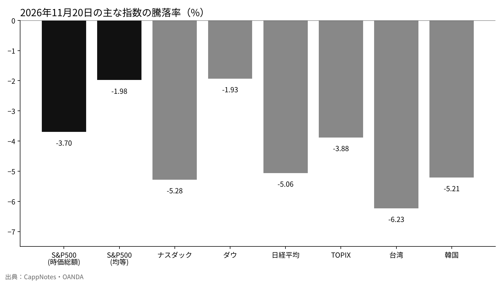
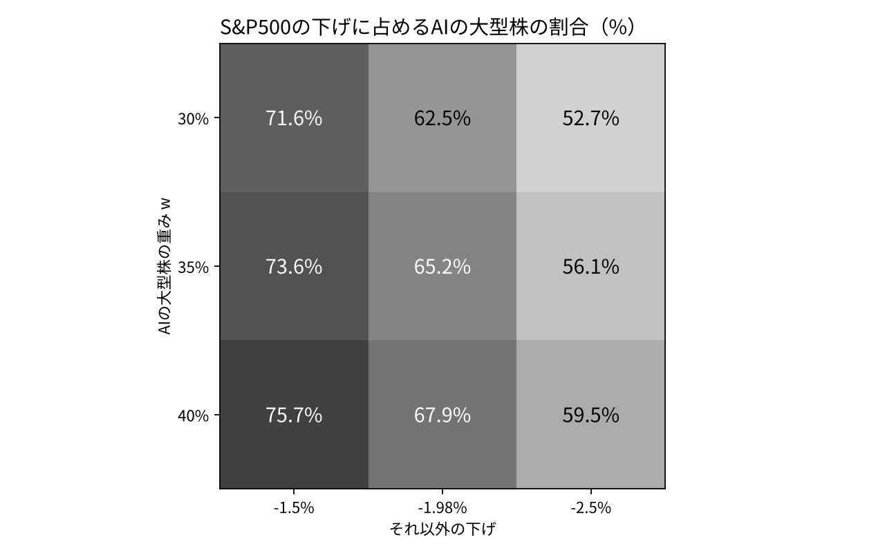

2026年11月のAI株の急落は、何がきっかけだったのか――エヌビディアの辞任と開示調査、アンソロピックの上場、利上げ観測で検証
2026年11月20日、S&P500は3.70%下げて7日続落となり、週間では8.6%安と2025年4月以来の大きさになった。同じ日に日経平均は3,007円（5.06%）下げ、台湾の株価指数は週間で17.5%下げた[8]。
下げの中心には、エヌビディアをはじめとするAIの大型株があった。ただし、きっかけは1つではない。
本稿の問いは、この急落のうち何割がAIの大型株への集中から来ていて、その集中を崩したきっかけは何だったのか、である。

- 時価総額で重みを付けたS&P500（−3.70%）と、全銘柄を同じ重さにした指数（−1.98%）の差から推計すると、下げの53〜76%はAIの大型株から来ていた。
- きっかけは3つ重なった。エヌビディアのCEO辞任（11月12日）と開示への調査報道（17日）、過去最大813億ドルのアンソロピック上場（19日）、12月の利上げ確率9割台である。
- 日本では信用買いの評価損益率が−21%台まで悪化しており、売らされる売りが下げを深くした可能性がある。きっかけは米国でも、下げの深さは借金の量で決まった。
問いと背景
株価指数の急落には、2つの種類がある。市場全体が同時に売られる下げと、一部の大きな銘柄が売られて指数を引きずる下げである。前者は景気や金融の問題を映し、後者は集中の問題を映すことが多い。
本稿で使う「集中」とは、指数の値動きが、時価総額の大きい少数の銘柄に強く左右される状態を指す。S&P500は時価総額で重みを付けるため、大きな会社ほど指数への影響が大きい。
「均等加重指数」とは、同じ500銘柄を、すべて同じ重さで持ったと考えて計算する指数である。S&P ダウ・ジョーンズ・インデックスが公表している[3]。2つの指数の差を見れば、大きな会社と小さな会社のどちらが下げたかが分かる。
「信用評価損益率」は、借りたお金で株を買った人が、まだ決済していない株でどれだけの含み損益を抱えているかを示す割合である。−20%前後まで悪化すると、追加の担保を求められて売らされる人が増え、底値の目安とされてきた[11]。
2026年11月は、AI関連の大型株が月初から売られていた。11月3日の米中間選挙の後にAIと半導体が売られ、11月12日にはエヌビディアのジェンスン・フアンCEOが辞任した[9]。その8日後に、日米台韓で同時の急落が起きた。
同じ週には、アンソロピックがナスダックに上場した。調達額は約813億ドルで、米国のIPOとして過去最大だった[8]。大きな上場は、ほかの株を売って買う資金を市場から吸い上げる面がある。上場2日目の11月20日、アンソロピックの株も8.50%下げて88.91ドルで終えた[8]。
データと方法
使うデータは、11月20日の各指数の騰落率、米10年債利回り、VIX（米国株の予想変動率）、日本の信用取引の評価損益率である。指数の騰落はCappNotesの集計[8]、金利とVIXはFRED[1][2]、信用取引は日本取引所グループ[7]と証券会社の公表値[11][12]を使った。
集中の寄与は次の式で推計する。S&P500の下げ（−3.70%）を、AIの大型株のグループ（重みw）とそれ以外（重み1−w）に分ける。それ以外の下げは、均等加重指数の下げ（−1.98%）に近いと仮定する。
式は「AIの大型株の寄与＝−3.70%−（1−w）×（それ以外の下げ）」である。wとそれ以外の下げは公表値がないため、wを30%・35%・40%、それ以外の下げを−1.5%・−1.98%・−2.5%と動かして感度を見る。
きっかけの特定は、日付の並びで行う。各出来事の発表日と、その後の値動きの順番を並べ、どの出来事が下げの前にあったかを確かめる。因果の証明ではなく、順番の確認である。
VIXは、S&P500のオプションの値段から計算される、今後30日の値動きの大きさの予想である[2]。数字が大きいほど、投資家が大きな値動きを恐れていることを示す。11月20日は35.89で、3月下旬以来の高さだった[8]。
結果
11月20日の主な指数の騰落を、下の図にまとめた。下げが大きかったのは、ナスダック総合（−5.28%）、台湾（−6.23%）、韓国（−5.21%）、日経平均（−5.06%）である[8]。いずれもAIと半導体の比重が高い市場だった。

一方で、均等加重のS&P500は−1.98%、ダウ平均は−1.93%にとどまった[3][8]。上げた業種は生活必需品だけだったが、下げの深さは業種ではなく、時価総額の大きさでほぼ分かれている。
出来事を日付順に並べると、下の表になる。
| 日付 | 出来事 | 出典 |
|---|---|---|
| 11月3日 | 米中間選挙。翌日からAIと半導体が売られる | [8] |
| 11月12日 | エヌビディアのフアンCEOが辞任。CFOのクレス氏が暫定CEOに | [4][9] |
| 11月13日 | 農林中金が半導体株ETFへの投資を始めたと報道 | [10] |
| 11月17日 | SECがエヌビディアの開示を調べていると報道 | [8] |
| 11月19日 | エヌビディア決算（売上高1,158億ドル）とアンソロピックの上場（調達約813億ドル） | [4][8] |
| 11月19日 | 米10年債利回りが一時5.10%台へ | [1] |
| 11月20日 | S&P500 −3.70%、日経平均 −5.06%、VIX 35.89 | [2][8] |
決算の数字は強かった。それでもエヌビディアは11月20日に14.01%下げた[8]。数字ではなく、経営の交代と開示への信頼が問われた下げだったと読める。
下げは米国の外にも広がった。台湾の加権指数は週間で17.5%下げ、ブルームバーグは1991年以来の悪い週と伝えた[8]。半導体の工場や部品の会社が多い市場ほど、エヌビディアの株価と同じ向きに動いている。
東京では、日経平均が寄り付きから800円を超えて下げ、11月6日の直近の安値を割って安値で引けた。プライム市場の売買代金は8兆6,300億円に膨らみ、電気機器と非鉄金属が大きく下げる一方、保険と空運は上げた[13]。
感度分析
AIの大型株のグループが、S&P500の下げの何割を占めたかを推計した。下の図は、wとそれ以外の下げの組み合わせごとの割合である。

9通りすべてで、AIの大型株の寄与は5割を超えた。中央の仮定（w＝35%、それ以外−1.98%）では約65%で、AIの大型株は1日で6.9%ほど下げた計算になる。
エヌビディア1社で見ると、指数での重みを6〜8%と置いた場合、−14.01%の下げはS&P500を0.84〜1.12ポイント押し下げた。指数の下げ全体の約23〜30%を、1社で説明できる。
考察
反対の見方もある。下げの主因は集中ではなく金利だ、という見方である。12月9日のFOMCで利上げする確率は9割台と伝えられ、金利の上昇は成長株の評価を下げる[6]。
ただし、11月20日には米10年債利回りが12ベーシスポイント下がって4.92%になった[1][8]。金利が下がった日に株が急落しており、この日に限れば、金利だけでは下げを説明しにくい。
日本の下げが米国より深かった理由には、信用取引がある。信用買いの評価損益率は11月6日に−21.08%まで悪化していた[11]。11月20日の松井証券の買い残の評価損益率は−22.71%だった[12]。損失が膨らむと追証が生じ、売らされる売りが出る。
限界もある。AIの大型株のグループの重みは公表値でなく、仮定である。均等加重指数を「それ以外」の代わりに使うのも近似にすぎない。答え合わせの基準は、12月に公表される指数の構成比と、FOMCの議事要旨である。
もう1つの反対の見方は、AIの事業そのものが行き詰まったという見方である。しかし、エヌビディアの11月19日の決算は売上高1,158億ドルで、市場の予想を上回っていた[4][9]。事業の数字が崩れる前に株価が崩れており、今回の下げは事業より評価の巻き戻しに近いと考える。
日付の並びにも限界がある。同じ週に出来事が重なると、どれがどれだけ効いたかは分けられない。本稿の結論は、3つのきっかけが重なったという範囲にとどまる。
結論
2026年11月の急落の53〜76%は、AIの大型株への集中から来ていたと推計できる。集中を崩したきっかけは、エヌビディアの経営の交代と開示への疑い、過去最大の上場による資金の吸い上げ、利上げ観測の3つが同じ週に重なったことだった。
下げの深さを分けたのは、集中の度合いと、借金で買われていた量である。
次に見るべき数字は3つある。均等加重と時価総額加重の差が縮むか、信用買いの評価損益率が−20%台から戻るか、12月9日のFOMCで利上げが決まった後に金利がどう動くかである。差が縮み、評価損益率が戻れば、集中の巻き戻しは一巡したと判断できる。
僕はこう見ている
僕は半導体の株を1株も持っていない。AIの投資の局面が終われば、作る側は余る側に回ると見ているからだ。持っているのはAIを使って稼ぐ側の会社と、量子、銀行、SpaceXである。
今回の下げで、僕の口座も1週間で6.21%減った。それでも売買は、IonQを決めた価格で500株足しただけだった。現物の長期投資なら、暴落はアウトレットのようなものだと思っている。借金で買っていなければ、売らされることはない。
一方で、銀行株は金利が上がると予想する人が多いのに売られている。僕はこれをチャンスだと見ているが、来週も決めた条件以外では動かない。次に動くのは、IonQ が終値で20ドルを割った日である。
参考文献
- Federal Reserve Bank of St. Louis (FRED)「10-Year Treasury Constant Maturity Rate (DGS10)」 https://fred.stlouisfed.org/series/DGS10
- Federal Reserve Bank of St. Louis (FRED)「CBOE Volatility Index: VIX (VIXCLS)」 https://fred.stlouisfed.org/series/VIXCLS
- S&P Dow Jones Indices「S&P 500 Equal Weight Index」 https://www.spglobal.com/spdji/en/indices/equity/sp-500-equal-weight-index/
- NVIDIA Newsroom（決算発表・人事の発表） https://nvidianews.nvidia.com/
- U.S. SEC EDGAR「NVIDIA Corp（CIK 0001045810）の提出書類」 https://www.sec.gov/cgi-bin/browse-edgar?action=getcompany&CIK=0001045810&type=8-K
- Board of Governors of the Federal Reserve System「FOMC の日程と議事要旨」 https://www.federalreserve.gov/monetarypolicy/fomccalendars.htm
- 日本取引所グループ「信用取引残高等」 https://www.jpx.co.jp/markets/statistics-equities/margin/index.html
- CappNotes「Closing Look — Friday, November 20, 2026」 https://cappnotes.substack.com/p/closing-look-friday-november-20-2026
- ダイヤモンド・オンライン「エヌビディア、ジェンスン・フアン氏退任後初の決算」（2026年11月20日） https://diamond.jp/articles/-/403781
- 日本経済新聞「動いた農林中金、AI株を『底値買い』」（2026年11月13日） https://www.nikkei.com/article/DGXZQOUB109MD0Q6A111C2000000/
- moomoo「日米株底打ちはいつ？日経平均5%安」（2026年11月20日） https://www.moomoo.com/ja/community/feed/when-will-the-japanese-and-u-s-stock-markets-bottom-117647633154054
- 松井証券「信用残速報」（2026年11月20日） https://www.matsui.co.jp/market/
- OANDA証券「日経平均サマリー（20日）」（2026年11月20日） https://www.oanda.jp/lab-education/market_news/mn_1045088_202611201757/
図はYUKI CAPITALが作成。写真：Unsplash
日々の数字と判断は、Xで記録している。